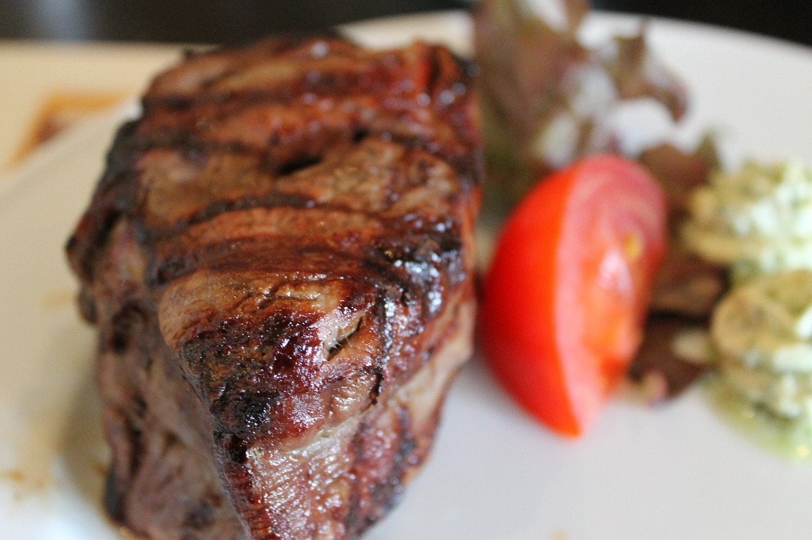
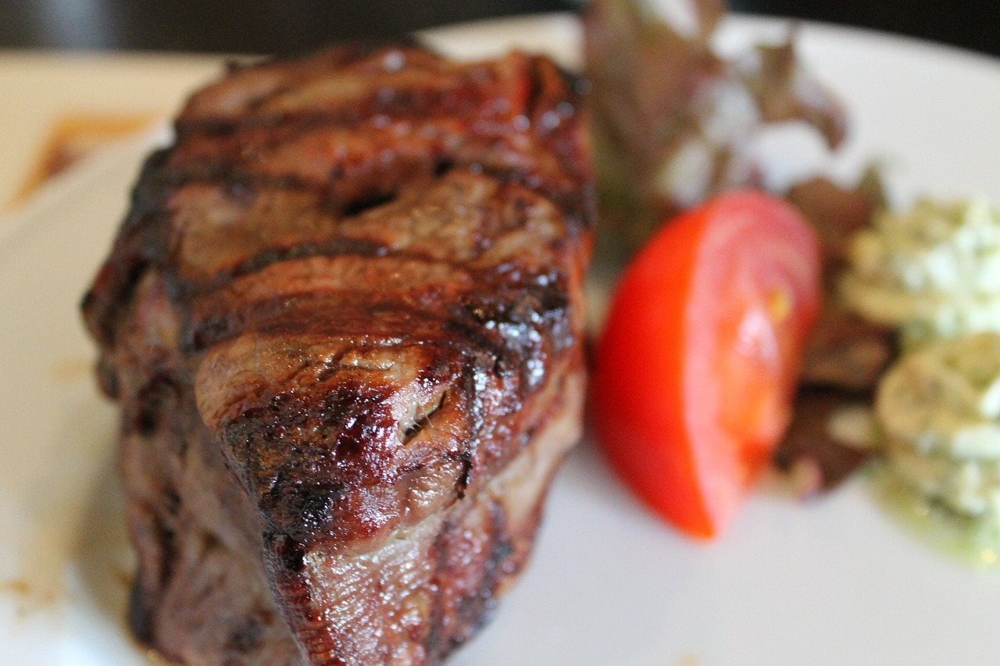
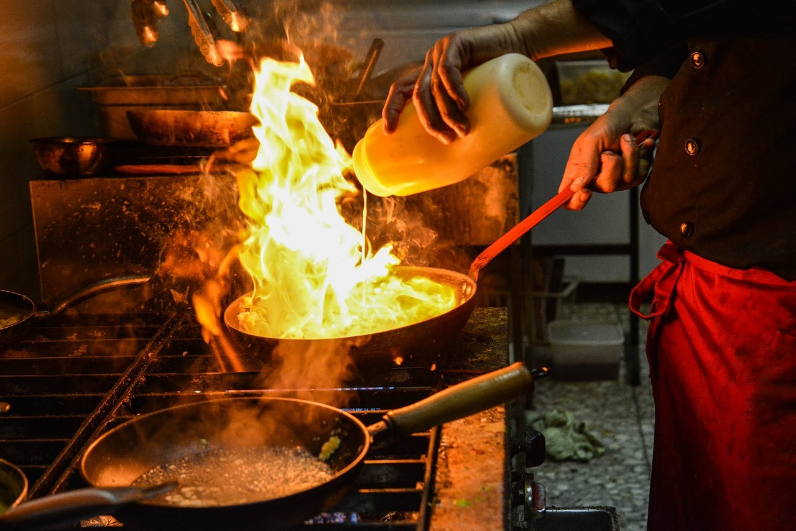

SEJAM BEM VINDOS AO SITE DO NOSSO RESTAURANTE
Nosso restaurante se destaca pela excelência nos sabores, onde cada refeição é preparada com dedicação e os melhores ingredientes.
Venha descobrir o sabor da autenticidade no nosso restaurante, onde cada prato conta uma história e proporciona momentos inesquecíveis.

O Beef on The Grill
A Churrascaria Beef On The Grill, fundada em 2010 por um grupo de amigos, é apaixonada pela gastronomia e pela tradição dos churrascos brasileiros. Com o objetivo de oferecer uma experiência única, a casa destaca carnes de alta qualidade em um ambiente acolhedor, inspirando-se nas receitas de várias regiões do Brasil. A churrasqueira de tijolos de barro confere um sabor especial aos cortes, que são preparados com carinho. Ao longo dos anos, a Beef On The Grill se tornou um ponto de encontro para amigos e famílias, celebrando a boa comida e as tradições brasileiras.

Descubra o Mundo do Churrasco!
Bem-vindo à nossa seção dedicada ao universo do churrasco, onde a paixão pela carne encontra a diversão! Aqui, você encontrará uma coleção de curiosidades fascinantes sobre diferentes cortes, tradições de grelhados ao redor do mundo e dicas para elevar suas habilidades na churrasqueira. Além disso, mergulhe em vídeos exclusivos que mostram técnicas, receitas irresistíveis e truques para deixar seu churrasco ainda mais saboroso. Prepare-se para se surpreender e se inspirar, porque cada grelhada é uma nova aventura!

 


